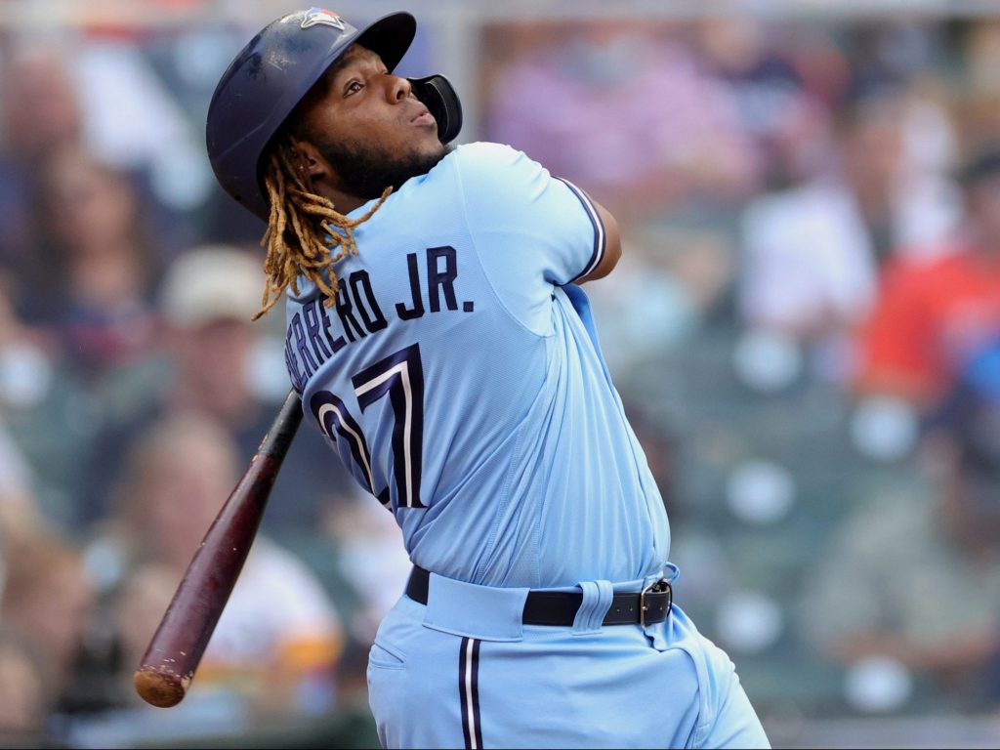
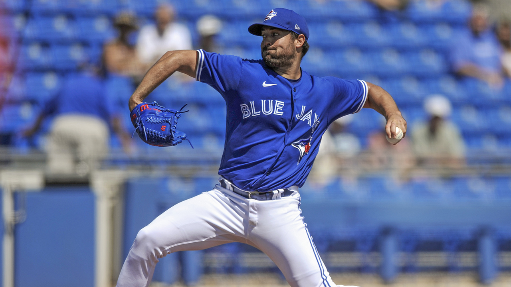

The Toronto Blue Jays are the professional baseball team of Toronto. They joined the MLB (Major League Baseball) in 1977. They are the only Canadian team who plays in the MLB. They've won two championships in 1992 and 1993. They are in the AL East division along with the Orioles, Yankees, Red Socks, and Rays. They play at the Rogers Centre located at 1 Blue Jays Way, Toronto, ON M5V 1J1.
The Toronto Blue Jays have had many incredible players playing for them. A few notable ones are Joe Carter, José Bautista, Roy Halladay, and Tony Fernández. Joe Carter was a right fielder and was a 5 time all star. He won the silver slugger in 1991 and 1992. José Bautista was a right fielder and was a 6 time all star who played for the Blue Jays from 2008-2017. He once placed third in MVP voting in 2011 and won the Silver Slugger three times. Roy Halladay was one of the Toronto's best pitchers of all time. He was an 8 time all star who played for the Blue Jays from 1998-2009. He won the AL Cy Young award in 2003 and 2010. Tony Fernández played with the Blue Jays in 1983-1990, 1993, 1998, 1999, and 2001.
Unfortunately the Toronto Blue Jays did not make the post-season by falling a bit short. Most say it was due to their bullpen pitchers. Though, their team was definately considered a top ten team in the league. Four of their players Vladimir Guerrero Jr., Marcus Semien, Bo Bichette, and Teoscar Hernandez were able to become all stars this year. Robbie Ray, one of their starting pitchers also played amazing with an ERA of 2.84. It was also a bit hard for them since they had to play away from their home in Buffalo for more than half of the season due to the fact the Canadian government didn't allow them to play in Toronto until July 30.
| Teams | Wins | Losses | Made it to the Post-season? |
|---|---|---|---|
| Tampa Bay Rays | 100 | 62 | Yes |
| New York Yankees | 92 | 70 | Yes |
| Boston Red Socks | 92 | 70 | Yes |
| Toronto Blue Jays | 91 | 71 | No |
| Baltimore Orioles | 52 | 110 | No |
Below is the full starting pitching rotation of the 2021 Toronto Blue Jays.
Below are the catchers apart of the 2021 Toronto Blue Jays.
Below are the first basemens apart of the 2021 Toronto Blue Jays.
Below are the second basemens apart of the 2021 Toronto Blue Jays.
Below are the third basemens apart of the 2021 Toronto Blue Jays.
Below are the catchers apart of the 2021 Toronto Blue Jays.
Below are the left fielders apart of the 2021 Toronto Blue Jays.
Below are the center fielders apart of the 2021 Toronto Blue Jays.
Below are the right fielders apart of the 2021 Toronto Blue Jays.
The future of the Toronto Blue Jays is looking great. They have great young players who will continue to develop such as Vladimir Guerrero Jr., Bo Bichette, and Alek Manoah. Though they may lose a few assets this year due to free agency. Robbie Ray and Marcus Semien will both become free agents this off season. This season Robbie Ray had an incredible season with an ERA of 2.84 and Marcus Semien had a batting average of .264 along with 45 home runs. Losing either one of them would a be a major loss.
https://www.mlb.com/bluejays/roster/depth-chart
https://en.wikipedia.org/wiki/Toronto_Blue_Jays_award_winners_and_league_leaders
http://40greatestjays.sportsnet.ca/
https://www.mlb.com/bluejays/news
Be sure to visit the official website of the Toronto Blue Jays.
Return to the top of the page.
 